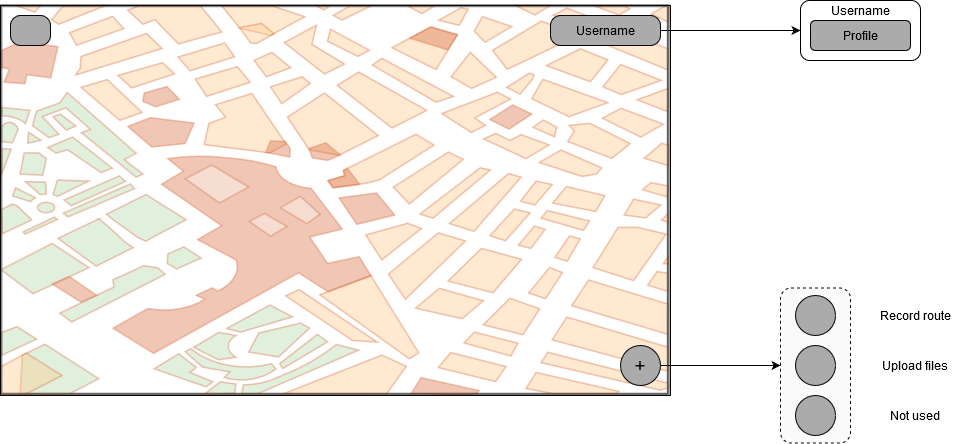

1. Introduction and Goals
ViaDe is a decentralized routes management application. Based on the Solid specification, which is itself based on the linked data platform, this proyect aims to bring its users an application that provides them with the tools to create their own routes, which is completely independent of the storage the user has chosen to use to store their routes; the user will also be able to share their routes with whomever they like, and attach images, videos and comments to the routes. This proyect aims to:
-
Provide the users a well-formed application, with the expected characteristics of a route management system combined with the SOLID possibilities.
-
Be reliable, operable, functional, suitable and transferable.
-
Be transparent with the use of user’s data. All the data is stored in the users' PODS, and each user knows if the application has access to their data.
1.1. Requirements Overview
The following table comply the requirements of the application, which can be found in the assignment page:
-
The system will be based on a decentralized architecture wheredata storage is separated from the app.
-
Users can store their routes in their own pods.
-
Users can view the routes stored on a map.
-
The app will allow a user to share pictures, videos or information about a route with other friends.
-
A user can get notifications when some friend shares a route with him.
-
Users can have groups of friends with whom they may want to share a route
-
It should be possible to view routes loaded by users that are using a different app, so interoperability with other route management systems should be taken into account.
-
The system could work on a mobile device
-
Users can share their routes while they are doing the routes
The project is also being evaluated by Inrupt, and they specified their own requirements as part of their challenge:
-
Ease of use by non-technical people
-
Responsiveness of the application
-
Online independence: no central control of data
-
Security and privacy: no vulnerability points
-
Aesthetics and friendliness of the application
-
Originality of the solution
-
Usability of technical documentation
-
Interoperability with similar Solid apps
1.2. Quality Goals
The aim of this proyect is to offer the users a way to manage their own routes, following some quality goals in order to guarantee a good user experience. .Quality Goals Scenarios
| Quality Goal | Scenario |
|---|---|
Reliability |
As the storage of the routes is not in a centralized server, the users can have always access to theirs and be able to manage them as the data is always on their PODs. |
Transferability |
The system ensures that the application is compatible with other applications that follow the same system and the users can share their routes or multimedia to other users who have a compatible application. |
Functional Suitability |
Whenever a user performs a change one of his routes or add a new one, the action must be done by the application and save on the record. |
These quality goals are the ones which have the most importance to the major stakeholders on this proyect.
1.3. Stakeholders
The following table describes the stakeholders of this project and what is expected from them at the beginning of the project, it will be updated as the project goes on if it is required.
| Role/Name | Expectations |
|---|---|
Development team |
The team must communicate constantly to know how all the parts of the development are being pieced together, to make the most out of continuous integration development. |
Teachers of the subject |
The teachers will eventually evaluate the work of the students in the project, and they are expecting a project that not only fulfills their mandatory requirements, but also does so with quality code, sufficient unit, scenario and load testing, extensive documentation, and visible teamwork. |
Inrupt |
As the project will take part in the Inrupt challenge, they are expecting that their requirements (listed above) are fulfilled. |
Solid Community |
The Solid community is formed by users avid to see new applications made by new developers to the community. They expect these applications to be not only usable, but also to comply with the Solid specification and to be as transparent with their data as possible. |
Expert users |
A user is considered an expert user if they know not only about Solid, but also about how route management applications normally work. They expect the application to be responsive and to be able to create their routes and share them easily. |
Non-expert users |
Non-expert users are either new to Solid or to route management applications or to both. They expect to be able to use with ease the application, even without the knowledge about these technologies. |
| Role/Name | Contact | Expectations |
|---|---|---|
Front-End |
Guillermo Fernández-Campoamor Fernández |
Focus on the front-end side of the app |
Front-End |
Fernando Sáenz de Santa María Modroño |
Focus on the front-end side of the app |
Front-End |
Alejandro Matas Sánchez |
Focus on the front-end side of the app |
Back-End |
Andrés García Celis |
Focus on the back-end side of the app |
Back-End |
Clara Miranda García |
Focus on the back-end side of the app |
Back-End |
Violeta Ruiz Martínez |
Focus on the back-end side of the app |
Back-End |
Miguel Rodríguez Huerta |
Focus on the back-end side of the app |
2. Architecture Constraints
2.1. Technical constraints
| Constraint | Explanation |
|---|---|
Solid |
The application must follow the Solid specifications and make use of Solid pods, as well as being decentralized and follow linked data principles. |
React framework |
React is the framework that will be used to implement the application. The architecture of the application has to be adapted to the inner workings of the Javascript library (components, routing, rendering…). |
Interoperability between similar webapps |
The design for the data saving and retrieving has to be thoughtfully taken care of such that a user can switch between similar apps without having to modify their data (using of Solid, W3C standards, etc.). |
TDD and BDD |
Any functionality added must be constantly and thoroughly tested by the development team, making use of the testing tools available (Cucumber, Travis, Codecov). |
2.2. Organizational and political constraints
| Constraint | Explanation |
|---|---|
Short development time |
Due to the nature of the course, the development time for the "finished" product is extremely small, consisting only of seven weeks. |
Empty budget |
Given that this is a student project, the budget for it is nonexistent. Team members will not be payed for their work, nor will they have access to non-free resources. |
Almost inexistent experience |
The team has hardly any experience with the technologies planned for use. This severely limits the productiveness of each member, and the team. |
Concurrent projects |
Many teams will be working within the same time frame on different apps, all with the same expected functionality. This means that coordination in creating a common vocabulary will be crucial for the satisfactory development of this, and every other similar product. |
2.3. Conventions
| Constraint | Explanation |
|---|---|
Linked Data |
The project has to make use of linked data principles and guidelines, following the Solid specifications. |
W3C Standards |
The architecture of the project has to comply with as many web standards as possible, as stated in the Solid specifications. |
React and Javascript best practices |
Guidelines and advices for React and Javascript should be followed to ensure an easily testable, fixable and readable application. |
UI Design |
The design of the user interface must feel intuitive for people new to the app. This means following current standards of interface, color and icon design. |
Documentation |
The project’s architecture must be documented in AsciiDoc format following the arc42 templates. |
3. System Scope and Context
The main goal of this project is to create a decentralized routes management system based on Solid, which means that every user has its own Pod, that is their own personal storage space, where all of their information is stored. The main communication partners of the applications will be the users themselves; the application will only ease the interaction.
Viade should have the following features:
-
The system should be based on a decentralized architecture where data storage is separated from the app.
-
Enable users to store their routes in their own pods.
-
Enable users to view the routes stored on a map.
-
Enable users to share pictures, videos or information about a route with other friends.
-
Enable the user to receive notifications when other friends share a route with him.
-
Enable the users to for groups of friends with whom the may want to share routes.
-
Enable the users to view routes loaded by users that are using a different app.
3.1. Business Context
Due to the requirement that states that the decentralized application must implement SOLID technology, each user of the system will have a POD where its data will be stored. The application will establish a communication with the user’s POD to read/write the required data from it.
-
Communication elements:
-
User: represents the end user of the application.
-
Viade: the application itself, in charge of managing the access to the data. Uses an authentication protocol to perform the user data access, and links that point to the user pod. which contains application data
-
POD: web-accessible personal datastore of each user.
-
POD Provider: gives the user the possibility of using the application with the data of their POD (can be the user itself, if they have made their own POD provider).
-

3.2. Technical Context
The application, although in its core a web application, is expected to work in all types of devices. In order to make it decentralized all user’s data will be saved in each user’s own Solid Pod.
-
Technical interfaces:
| Technical interface | Description |
|---|---|
Solid |
It will work as the base of the project, setting the foundations of what the application will strive to do. |
Javascript |
It is the language of choosing for the application, plus React, the chosen library to develop the project with, uses Javascript so it was a must. |
React |
Library used to create the interface of the application and integrate it with the accesing of data to the POD. |
Map API |
The application is a route management system, therefore it needs a map API that brings the user an interface to see their routes and manage them more easily. |
4. Solution Strategy
4.1. Technology decisions
The following technologies are the ones used in the project:
-
React. The application is web-oriented, with support for all types of devices with a responsive and usable interface. Initially the team was set on developing both web and native versions of the application, but the native version was later discarded (more information in the technical debts section).
-
Google Maps React. Library that makes use of the Google Maps API, it eases the development with geographical data and helps provide high usability to the users.
-
Solid libraries. This libraries will ease the connection between the application data and the user’s pod data, specifically in the operations of saving, retrieving and interconnecting data.
-
Jest. Library used for testing purposes. The default React app created with the generator already comes with this library installed. This library does not only ease the making of unit tests for TDD and BDD, but also is highly versatile and can be integrated with other testing tools and utilities which are used in the project such as React Testing Library or Cucumber.
4.2. Decomposition of the system
-
The system will be divided in interrelated high-level modules, or layers.
-
Each module will contain several components (or sub-modules, in some cases), and different components between modules may be connected between each other to pass data.
-
The only connections between the modules will be user data moving from one place to another, through middle "facade" classes. The components in the modules will not notice the data moving, only when they have data available.
-
The moving of the data between modules will be accompanied with the use of caches (control layer, more on the building blocks section), which save data in memory to speed-up data-retrieving operations. Caches behave like gateways, containing CRUD operations, and there’s only one instance of each cache in the app.
This module and component-oriented design will make the division of the development work much easier, and the using of facades for data accessing decouples the interface from the data, somewhat similar to a MVC layout, keeping cohesion; although a drawback that will have to be taken into account is the independent development of components, which can obfuscate the team if the interconnection between components and modules is not considered when developing and testing. This type of design in React, though, is somewhat difficult, because React components work as views and work with interconnected states and hooks; the team will note this and create the best possible mixing of logic in Javascript with React components.
4.3. Decisions on how to achieve quality goals
-
Agile methodology. The team set on developing with an agile methodology in mind: use of kanban, use of issues to enhance communication, division of tasks in small and doable user stories, and giving feedback to each other when possible (connecting to previous point).
-
Testing. Test-driven development and behaviour driven development are a must to achieve any form of quality. When creating user stories, as many testing scenarios as possible will accompany them to ensure what the new functionality must achieve and what it should not do. This will lose time when creating the functionalities, but it will help the agility of the development in the long run.
-
Coordination and communication. The team will coordinate itself through discussing as much as possible every problem or idea, as well as giving feedback in pull requests and issues in development.
4.4. Organizational decisions
-
The team will use user stories combined with Kanban, as well as issues and pull-requests from Github to keep a workflow; with previous experience in the degree in agile development, this semi-agile workflow will benefit more the development than a systematic one.
-
The team will be split initially into two sub-units: front-end and back-end. Because information research in Solid and React was also divided, it is the right decision to keep this division in the development process, though it is not a complete split, that is, each team member is not forced to work in their part, specially in critical situations where more people is needed to solve an issue.
5. Building Block View
5.1. Whitebox Overall System

- Motivation
-
The above decomposition eases the development by a fair margin, as the division of tasks is more direct among the development team members; the team has two sub-units, front-end and back-end, and this division clearly states what should be done mostly by each sub-unit, and how they should coordinate to make everything connected. The different modules are created upfront, and from there every member will know what will be connected to what they are creating.
As it can be noted, it is fairly similar to an MVC or a layered architecture.
- Contained Building Blocks
-
-
Viade: The main application, the project being created.
-
- Important Interfaces
-
-
Pod provider: Any Pod provider available for the user to choose. Crucial for the application to be able to connect to the user’s Pod.
-
User’s Pod: The data storage of the user. The application will have access to it, to move the necessary data to provide its functionalities.
-
User: The user, which has access to the application, and gives their permission for it to manipulate their Pod, so they can access the functionalities of the application.
-
5.1.1. Level 1 - Viade

-
Purpose/Responsibility: Viade is a route-management system that lets users create routes and share them with their friends, and is based on the Solid specifications. It is structured as a layered-architecture web application, with layers connected through facades (very similar to a MVC structure).
-
Contained Building Blocks:
-
Interface Layer: The layer with which the user will directly interact. It has all the components related with the user interface, and it relies on the Control Layer to get any needed data to output to the user.
-
Control Layer: Layer that deals with receiving requests from the Interface Layer, do different requests to the Data Access Layer, receive the data, save it and send it to the Interface Layer.
-
Data Access Layer: This layer will transform requests from the Control Layer to requests to the User’s Pod. In some cases it will retrieve data, and it will process it accordingly so the Control Layer can receive it and use it.
-
-
Directory/File location:
viade_en2b/src.
5.1.2. Level 2 - Interface Layer

-
Purpose/Responsibility: Ease the interaction between the user and the Viade system.
-
Contained Building Blocks:
-
Module pages: Composed of the principal pages of the system, it contains components from all the other modules.
-
Module login: A small module that contains the necessary code to provide a user with the capability of logging in into the application and enjoy all its functionalities.
-
Module map_components: This module contains the components directly related with the map interface that manage the interactions between the user and the map.
-
Module generic_components: Module contained by components that do not have an specific role and are scattered around the application (like buttons with certain functionality or some interfacecomponents that keep a consistent style troughout the application).
-
Module spec_components:
-
-
Directory/File location:
viade_en2b/src/components.
5.1.3. Level 2 - Control Layer

-
Purpose/Responsibility: Validate data and attend requests coming from the interface layer, make requests to the data-access layer to meet those requests and send the response back to the interface layer. In this layer data will also be cached, so the number of petitions to the POD is decreased and thus the application can serve content to the user faster.
To note: there’s only one instance of each cache present in the application, thus these working very much like singletons.
-
Contained Building Blocks:
-
Module friendCache: Stores and makes petitions related to data of a user’s Solid friends.
-
Module configCache: This cache only stores the chosen interface mode (light/dark mode), to pass the state between views. It does not make petitions or receive data from the Data Access Layer, as it does not need to.
-
Module fileCache: Stores and makes petitions related to files that a user has attached to routes. It communicates with the route cache to receive or give information about the files of a route.
-
Module routeCache: Stores and makes petitions regarding routes stored in a user’s POD. It communicates with the file cache to receive or give information about the files attached to its routes.
-
Module notificationCache: Controls the notifications sent to the user, saves them and appropiately treats them.
-
Module friendGrouopCache: This cache simply manages the groups of friends and caches them.
-
-
Directory/File location:
viade_en2b/src/caches.
5.1.4. Level 2 - Data Access Layer

-
Purpose/Responsibility: Retrieve and save data from the authenticated user’s Pod related to the functionalities of the application. This layer will receive information by the control layer and make use of web standards to move the needed data accordingly. Inside the black box "Managers" are all the managers dealing with the access to Solid data, explained below.
-
Contained Building Blocks:
-
Module gateways: As its name says, it contains gateways that bar the passing of data between the control layer and the other submodules in the data access layer; this gateways will redirect the petitions to the correspondent submodules.
-
Module FileManager: Module that interacts with the files the user has attached to the routes in the POD.
-
Module RouteManager: Module that deals with the creation, updating, deletion and listing of routes in the user’s POD.
-
Module FriendManager: Module that deals with the Solid friends of the user interacting with the application.
-
Module FriendGroupManager: Module that deals with the groups of Solid friends created within the application.
-
Module NotificationManager: Module that deals with the notifications sent and received to the POD from the app by the user.
-
Module ShareManager: Module that deals with the sharing options of the application and distributes the data accordingly in the user’s POD.
-
-
Directory/File location:
viade_en2b/src/data-accessandviade_en2b/src.
| Symbol | Explanation |
|---|---|
A user using the application. |
|
|
A whitebox module. It is a module that does not encapsulate any other notable modules inside it. |
|
A blackbox module. It is a module that contains inside other modules that need to be explained in detail. |
|
Association between two modules indicating that a part of a module directly access other part of other module. |
|
Association between two modules indicating that an access to any module is not direct and may be done through external-to-the-application modules. |
|
A Solid POD of a user. |
|
A high-level module encapsulating more notable modules inside it. It is composed of whitebox and blackbox modules. A high-level module represents in detail a blackbox module in a higher level. |


6. Runtime View
In this section of the documentation important use cases will be described in order to understand how the system communicates at runtime.
This part of the documentation will be in continuous development.
6.1. Login into the application
Users can access the functionalities of the application logging in with their Solid account.

6.2. Adding a route
The user will be able to add new routes. The data belonging to that specific route will be stored in their own particular pod.

6.3. Recording a route
Once a user presses the button to start recording, they can move and their movement will be tracked; when they press the button again to stop the recording and name the recorded route, it will inmediately saved in the cache and sent to the POD.

6.4. Sharing a route
The users are capable of sharing a route that has been previously added with their friends. In order to do it, they will just select the route that should be shared and the system will get it from the user’s POD. Afterwards, Viade will notificate the user about the state of the sharing process, indicating whether there’s been an error or not.

6.5. Adding a friend
In our application, users have the possibility to add other users as friends, and so, be able to share routes with them.

6.6. See created routes
The user can see the routes that they have in their POD, and can interact with those routes' data in various ways.

6.7. Link to a route an uploaded file
Users can upload a file from their device (image or video) and automatically link it to a selected route.

6.8. Commenting a route
Users can leave comments in their own routes or routes that other users have shared with them.

6.9. Receiving a notification
Users receive notifications when an user posts a comment in one of their routes or a route is shared with them.

7. Deployment View
The deployment is fairly simple, as our application was designed as a web app. When accessing the web page via any modern browser, be it desktop or phone, the react app with our code gets loaded into memory, and checks if you are already logged onto any SOLID service. If you are, your data will automatically be downloaded from that server using HTTP GET requests to your profile URI.
When in the main page, the app also asks the Google Maps API for a map to display to the user, customized to our own style. When the user makes any modification to their data, an HTTP POST request is sent to the appropriate pod. For example, when sharing a route, the appropriate POST request is done to the destination pod, different from the users (and possibly in a different server).

8. Cross-cutting Concepts
As this project does not have a properly said database(using sql for example) we will use the pods as the database storing the different data as files with a the format decided as the standard, which in the lasts weeks at least regarding both groups of our lab is storing data in jsonld file in the pod.
Our project was intended to have a more or less layered architecture dividing the funcionalities in layers, we used gateways for accessing data, intermidiate classes for linking the gateways and the presentation layer.
As the project advanced we decided several things that affected the project in one way or another here are some decisions that we made.
-
We decided to use jsonld as the file to save the data as the first suggestions in the viade_spec were more inclined to do this.
-
We decided to create a route in real time while the user is doing it as all the team members decided that it makes sense to do it this way.
-
We decided to prioritize funcionalities over testing in general as we thougt that we had no time to do all that we´d like to do.
-
We decided to leave behind the initial idea of using react native for a phone app due to not having enough time to develop 2 different versions of the app and meeting the funcional objectives.
-
We decided to follow the idea of accepting GPX files in the app as other groups did the same as this offers another grade of interoperability.
-
When the turtle discussion rose in the viade_spec we decided to stay with the viade_spec initial idea of using jsonld for the data stored in the pods.
We used several modules/libraries that made several of the funcionalities possible and without them it would have been impossible for us to develop them, some of the libraries/modules are listed and explained next.
-
solid-auth-client : use the login system most of the time
-
solid-file-client : get and upload files from/to the pods
-
react-router-dom : use a lot of things as redirects and assigning components to a url from react
-
react-toastify : implement notifications
-
google-maps-react : show the routes in the map
-
@solid/react : use ldflex to get user info
-
jest-cucumber : for testing
-
jest-puppeteer : for testing
As there is no final decisions about anything at the moment that belongs to this category because the development of the app hasn´t started yet, so there is not much to put in this category for now, but it will be updated as the project goes on. I haven´t erased the examples of this document to take a look to them when it is really needed in the near future.
This section describes overall, principal regulations and solution ideas that are relevant in multiple parts (= cross-cutting) of your system. Such concepts are often related to multiple building blocks. They can include many different topics, such as
-
domain models
-
architecture patterns or design patterns
-
rules for using specific technology
-
principal, often technical decisions of overall decisions
-
implementation rules
Concepts form the basis for conceptual integrity (consistency, homogeneity) of the architecture. Thus, they are an important contribution to achieve inner qualities of your system.
Some of these concepts cannot be assigned to individual building blocks (e.g. security or safety). This is the place in the template that we provided for a cohesive specification of such concepts.
The form can be varied:
-
concept papers with any kind of structure
-
cross-cutting model excerpts or scenarios using notations of the architecture views
-
sample implementations, especially for technical concepts
-
reference to typical usage of standard frameworks (e.g. using Hibernate for object/relational mapping)
A potential (but not mandatory) structure for this section could be:
-
Domain concepts
-
User Experience concepts (UX)
-
Safety and security concepts
-
Architecture and design patterns
-
"Under-the-hood"
-
development concepts
-
operational concepts
Note: it might be difficult to assign individual concepts to one specific topic on this list.

=== <Concept 1>
<explanation>
=== <Concept 2>
<explanation>
…
=== <Concept n>
<explanation>
9. Design Decisions
In this project one of the main constraints for developing the application is the use of React and SOLID technologies, and the implementation of a web view of the application. Taking into account these constraints we decided to develop two versions of the application, one version is a web application that can be access from the navigator, and the other version is a mobile app.
The VIADE application is an application based on the management and tracking of Routes created by the users, therefore the user would want to have the application to be accessible from anywhere. For this reason we think that is better to have a mobile version of the VIADE Application. As one is the constraints of the project is the mandatory development of the web-version application, we will implement the mobile-version and web-version apps. The mobile-version will have all the powerful and useful functionalities (the tracking of routes while the user is walking, take and add pictures or videos of the routes, and other functionalities that are supposed to be done on the outside. The web-version will be a reduced version of the mobile one, but still being a functional and realiable application. The decision of develop two application-versions might be a risky decision but following the next architecture pattern we think the risk will be lower: This pattern is the Façade Architecture pattern.
In our case we want to develop two different versions, one for mobile and another for the web.
- We decided to follow this patterns for two reasons
-
-We may have a lot of independent classes, so this is a nice way of diving the system into subsystems, providing a simplified view of the whole system. -As we want to develop two versions of the app, the data access and the bussiness logic should be nearly the same in both. The main difference between both versions is the presentation layer as they use different technologies (React and ReactNative, respectively).The use of this pattern help us to have the same logic classes for both versions and the possible integration of both within the same project.
| Problem | Solution |
|---|---|
App Context |
Devolop of two compatible versions |
Two Versions |
Use of Façade Architecture pattern |
Complex System |
Use of Multitier architecture( Presentation tier, Business Tier, Data Access Tier ) |
Above is shown the first draft of the Architectural Design, followind the Façade Architecture pattern.

Our application has different views for the different actions that a user can perform. Before implementing that views we discuss about the design of them. First we decided that we wanted a side menu (hamburguer menu) used to access to any of the application’s functions. The Home view of the application should be a map representing the route selected by the user, or a default route if any is selected, and a login button to access the login view. Here are shown the first drafts of the views:
- List Routes View
-

- Home View
-

- Login View
-

10. Quality Requirements
Many quality attributes were present in our minds when developing the applicarion. But one was highly prioritized above all the others. And that one is the usability. When we were discusing how to make the program we reached the conclusion that this one was the most important one, since in our opinion, this kind of application should be easy to use. So with that focus in mind we decided to make the application the most intuitive and easy that we could.
Another quality attributes that were relevant were the interoperability of the application, were alongside the other group of students developed a common standart so the application would be functional between each other.
Since the program is built using Solid we have acces to Solid’s use of permisions, granting the application an extra layer of security in the files of the user.
As every application should be we developed this with the concept of reliability in mind, we do not want the user to get confused if some problem happens, so we made sure to make that not a single one happens.
10.1. Quality Tree
The tree below shows some of the quality attributes that we already discussed and decided to be relevant to the development.

10.2. Quality Scenarios
| Quality Attribute | Case | Action | Response | Response time |
|---|---|---|---|---|
Usability |
U.1 |
The user wants to add a new route to the application, by pressing the record button in the main menu. |
The application starts recording the route, changing the icon of the button to give feedback to the user. |
<500ms |
Usability |
U.2 |
The user tries to upload a multimedia file to a route. He opens the menu to upload the file and adds the file(s) to the zone |
The program will use a drag and drop feature to easily add a file only needing to drop the file(s) in the marked zone |
<1500ms |
Reliability |
R.1 |
The user tries to upload a file in a wrong format |
A notification will appear in the top of the screen warning the user that the specified file is not supported. |
<800ms |
Securability |
S.1 |
The user will try to access the routes stored in application |
The application will retrieve the routes stored in the pod. The solid pod has a control in the permisions of its data making it a secure way to store information |
<5s |
Securability |
S.1 |
The user will try to access the routes stored in application |
The application will retrieve the routes stored in the pod. The solid pod has a control in the permisions of its data making it a secure way to store information |
<5s |
Efficiency |
E.1 |
The user will want to list any type of information of the application |
The pod will access the cache of the pertinent request in order to extract the information requested in an efficient manner. |
<1s |
Efficiency |
E.2 |
The user has finished recording the route and has given it a name |
The application will redirect to the routes page automatically and show all the routes including the new one |
<2s |
11. Risks and Technical Debts
In the development of this project we are facing the following risks that may affect our work:
| Risk | Measures we are taking |
|---|---|
The team is not familiar with Solid |
We will be researching about it using all the resources available at the official webpage and repositories. |
The team is not familiar with React framework |
We will be researching about it to be familiar with all of its capabilities that fit the most in our project. |
No experience working in a team this big |
We will be working on using Git properly to get the most out of it and keep an open conversation to divide the work in the best way possible |
Little experience with JavaScript |
We will try to work on our own to get familiar with the language. |
Coordinating with other teams to reach an standard |
We should be working with other teams to agree on using an standard for the routes to provide interoperability. |
We also faced several difficulties that translated as technical debts:
| Technical debts | |
|---|---|
Code debts |
Description |
Code obfuscation |
Once the project grew, the code became more and more obfuscated to the point that editing some part of a functionality broke both the app and the tests. |
Coupled design |
Related to the previous issue, all the modules related depend too much on each other and difficult working on the code. |
Design debts |
Description |
React Native |
The project was initially thought to be developed in both React and React Native. But it was later decided, after much investigation and thought put into it, that it was not going to be possible to provide both applications, so the team sticked to the web application. |
Test debts |
Description |
Jest |
The team had to inadvertently learn how to work with the Jest library and a couple of other testing utilities to be able to test the project being developed. |
Cucumber |
The team also had to learn to create scenario testing using Cucumber, Jest and Puppeteer. |
Load test |
Although much hours were put into trying make Gatling work with the Docker containers of the Node Solid Server and the application, it was ultimately not possible to do it in time. |
12. Glossary
| Term | Definition |
|---|---|
W3C |
Short for The World Wide Web Consortium, the W3C is an organization composed by many members and groups around the world that seeks to standarize how resources in the web should be created, linked, found, etc. in order to make it accesible and free for everyone. It has established itself as the most important and well-known organization for standarizing the web. |
Solid |
"Solid (derived from "social linked data") is a proposed set of conventions and tools for building decentralized social applications based on Linked Data principles. Solid is modular and extensible and it relies as much as possible on existing W3C standards and protocols." (taken from https://solid.mit.edu/). |
Linked Data |
The idea of Linked Data lies solely on the base of making data in the web interconnected, so everything can be searched (or queried) through links between different resources (more on https://www.w3.org/standards/semanticweb/data). |
POD |
A Solid POD is a personal storage space that contains documents and that gives the possibility of establishing different permissions to deal with said documents. |
Test-driven development (TDD) |
Type of development that consists in writing the tests while or even the code to be tested that adds any functionality. Tests are normally combined into units, which contain one or more tests related to a certain functionality. |
Behaviour-driven development (BDD) |
Derived from TDD, this type of development takes TDD’s unit testing and wraps it around and explicit explained of the scenario(s) being tested (similar to user stories), thus asserting the correct behaviour of different use cases. |
About arc42
arc42, the Template for documentation of software and system architecture.
By Dr. Gernot Starke, Dr. Peter Hruschka and contributors.
Template Revision: 7.0 EN (based on asciidoc), January 2017
© We acknowledge that this document uses material from the arc 42 architecture template, http://www.arc42.de. Created by Dr. Peter Hruschka & Dr. Gernot Starke.